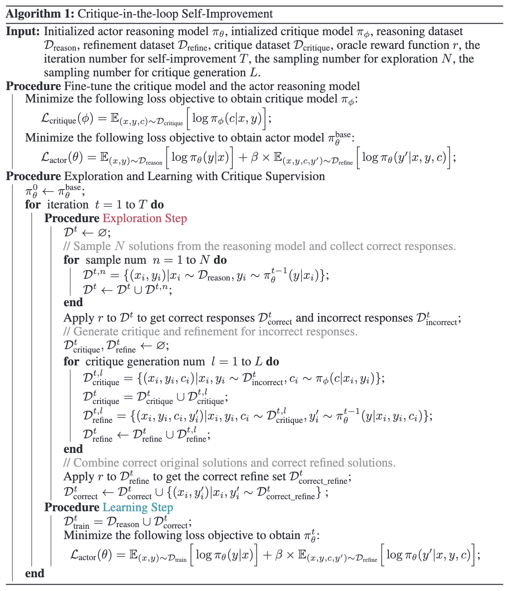
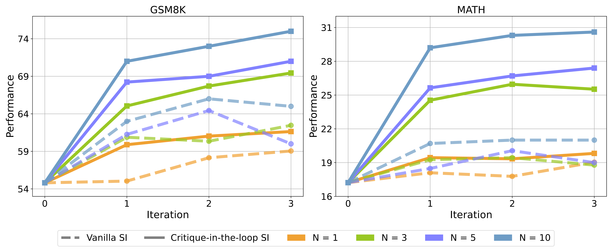
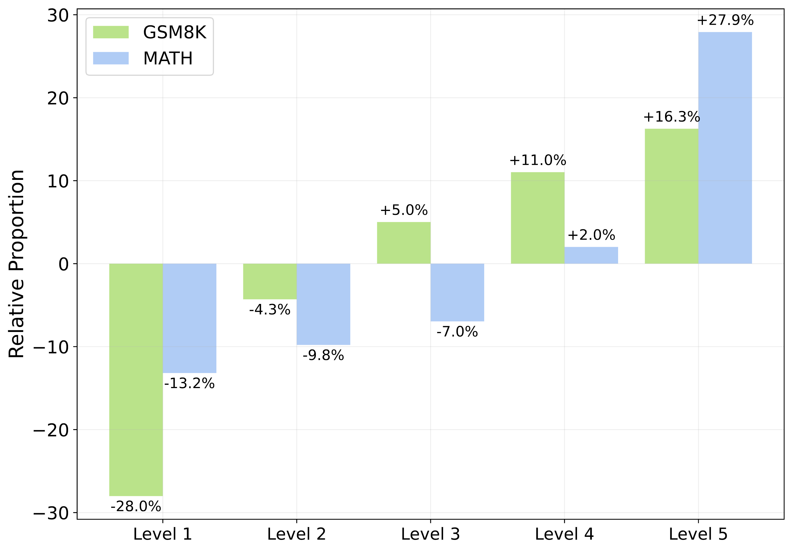
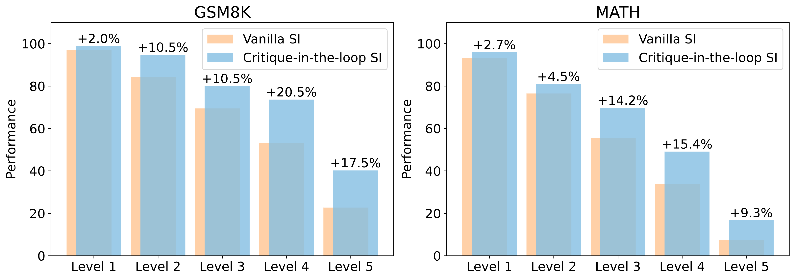

Critique-in-the-loop Self-Improvement for Better Reasoning Models
Motivated by the test-time findings in Test-time improve that critique models significantly aid in solving
challenging problems, and that they substantially raise the reaosning performance ceiling when scaling up
computation, we integrate the critique-based supervision into the actor model’s iterative exploration and
learning process. We introduce a critique-in-the-loop self-improvement method,which scales up exploration
computation on challenging queries and leads to the development of stronger reasoning models.


The evaluating results of critique-in-the-loop self-improvement. "SI" in the figure means
self-improvement.
Compared to the vanilla self-improvement approach, our method achieves significant performance
improvements, particularly at larger N values.
Here are our main findings :
Critique-in-the-loop self-improvement consistently improves reasoning performance.
The evaluating results of our method are shown in Figure 6. We can observe that: (1) Increasing the number
of samples during exploration improves performance, with the performance upper bound rising accordingly,
underscoring the benefits of enhanced exploration computation. (2) Our method consistently outperforms
vanilla self-improvement with stable and significant performance gains, especially when the sample number
N is larger.

The difference in the proportion of training data across different difficulty levels obtained from the exploration steps of the critique-in-the-loop self-improvement method compared to the data obtained from the exploration steps of the vanilla self-improvement method. On both datasets, our method increases the proportion of difficult problems in the training set while reducing the proportion of simpler problems.

The performance differences between our method and vanilla self-improvement on test sets of varying difficulty. While our method slightly outperforms the vanilla approach on simpler problems, it achieves significantly greater improvements on harder problems.
Critique-in-the-loop self-improvement balances the solution distribution across difficulty levels,and enhances performance on challenging queries in the test set.
As shown in Figure 7, we find that our approach samples a higher proportion of solutions for challenging queries during the exploration stage. This significantly balances the training data distribution for the learning stage, effectively mitigating the tail narrowing issue. In Figure 8, we also present the model’s performance on the test set across different difficulty levels, and we observe that our method performs significantly better than the vanilla approach on harder problems, further demonstrating the potential of our approach.
Combining test-time supervision with training-time supervisions yields more performance gains.
| Training-time |
Test-time |
GSM8K |
MATH |
| Training-time |
Test-time |
Acc |
Pass@5 |
MV@5 |
Acc |
Pass@5 |
MV@5 |
| response only |
response only |
54.8 |
75.2 |
54.5 |
17.2 |
35.0 |
15.6 |
| Supervised Fine-tuning |
w/ critique model |
63.3 |
87.6 |
75.4 |
24.3 |
47.4 |
30.7 |
| Supervised Fine-tuning |
response only |
54.2 |
73.1 |
53.4 |
18.1 |
32.4 |
16.6 |
| Self-Correction Fine-tuning |
self-correction |
60.1 |
81.5 |
67.2 |
24.2 |
41.7 |
26.1 |
| Self-Correction Fine-tuning |
response only |
64.6 |
83.4 |
70.6 |
20.2 |
38.5 |
23.0 |
| Vanilla Self-Improve |
w/ critique model |
70.2 |
90.8 |
78.2 |
27.0 |
48.8 |
31.4 |
| Vanilla Self-Improve |
response only |
75.5 |
89.1 |
80.1 |
31.3 |
51.0 |
35.1 |
| Critique-in-the-loop Self-Improve |
w/ critique model |
75.8 |
91.8 |
82.8 |
31.4 |
53.1 |
36.8 |
Evaluation results of combining different training-time and test-time methods. During training, "Self-Correction Fine-tuning" refers to training a model with both reasoning and correction capabilities. For test-time methods, "response only" represents the actor model generating a response without additional correction or critique; "w/ critique model" indicates using a critique model at test-time to provide feedback, enabling the actor to perform refinement; and "self-correction" refers to the model generating a response and then performing correction by itself. The best performance is in bold and underlined, while the second-best performance is underlined.From the results, we observe that both test-time and train-time critique supervision provide consistent improvements, and the combination of the two achieves the best performance.
Evaluation results shown in Table 3 reveal that: (1) Integrating critique models during test-time consistently enhances performance under identical training conditions, particularly when critique supervision is not used during training. For example, applying critique models at test-time increases the MV@5 performance of SFT on GSM8K and MATH by $10.9$ and $15.1$ points, respectively. (2) When critique models are used during training, the additional benefit of test-time critique supervision becomes marginal, suggesting successful “distillation” of critique models into the actor during training. (3) The self-correction baseline underperforms compared to utilizing separate critique models, aligning findings in prior work that models struggle to accurately evaluate and refine their outputs without external feedback. Moreover, training a single model to handle both reasoning and correction capabilities may introduce conflicts, leading to performance degradation. (4) Compared to the traditional strategy of vanilla self-improvement + response-only, which increases computation during training, the approach of supervised fine-tuning + test-time critique supervision reduces training computation while increasing test-time computation and achieves better performance, particularly on the more challenging MATH dataset. This aligns with prior work highlighting the benefits of enhancing test-time computation.